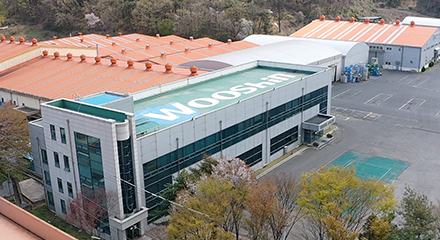
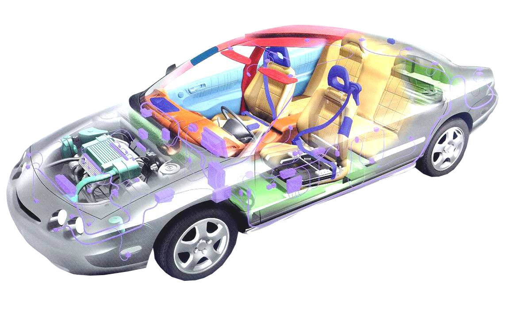

당진공장
- 대지
- 13,738평
- 건평
- 4,366평
충남 당진시 면천면 아미로 94
AUTOMOTIVE EXHAUST SPECIALIST

WOOSHIN / DANGJIN PLANT01 / ABOUT WOOSHIN
1971년 설립된 우신공업은 자동차 부품 제조기업으로, 배기 머플러·배기 매니폴드·촉매 컨버터를 생산합니다.
고객에게 감탄을, 임직원에게 행복을.
자동차와 환경, 사람을 생각하는 기술을 이어갑니다.
COMPANY PROFILE / 회사 현황
인원 및 아래 사업장·인증·생산차종 정보: 2026년 회사소개서 기준
OUR HISTORY / 회사 연혁
제품 개발에서 연구·생산 기반 구축까지,
기술과 함께 성장해 온 기록입니다.
02 / OUR PRODUCTS
배기시스템을 구성하는
우신공업의 주요 제품을 만나보세요.
EXHAUST / MOTION GRAPHIC
속도를 바꾸고 엔진음을 켜며
자동차 모션 그래픽을 즐겨보세요.
차량과 연기는 시각적 연출이며, 엔진음은 별도의 할리데이비슨 Sportster 녹음입니다. 실제 우신공업 제품의 성능을 나타내지 않습니다.
EXHAUST SYSTEM / 배기 시스템 구조
배기시스템의 부품을 개발하고 생산합니다.

Front Muffler → Center Muffler → Rear Muffler
WCC ASSY · UCC
DOC · DPF · MIXER · SCR
구성 명칭은 회사소개서의 배기 시스템 구조를 기준으로 정리했습니다.
VEHICLE APPLICATIONS / 생산 차종
2026년 회사소개서에 수록된 생산 차종입니다.
니로(SG2 PE), 봉고(PU), 쏘렌토(MQ4), 카니발(KA4), 타스만(TK1), 모닝(JA), 레이(TAM), 캐스퍼(AX)
생산품: FRT · CTR · REAR (차종별 구성은 상이)
모닝(JA / JA PE2), 레이(TAM), 스토닉(YB), 니로(SG2 PE), 스포티지(NQ5), K5(DL3), K9(RJ), 봉고(PU), 캐스퍼(AX), HB20(BR2), i10(AC3), 크레타(SU2b), 코나(SX2), i30(PD), 아반떼 N(CN7 N), 쏘나타(DN8), 마이티(QT), G70(IK), 투싼(NX4)
생산품: 카파·누우·람다·세타 계열 WCC/UCC, DPF 및 GPF 등. 상세 적용은 공식 제품정보를 확인해 주세요.
03 / RESEARCH & PRODUCTION
우신공업 기술연구소는 저소음·고출력 배기시스템과 배기 매니폴드의 연구개발을 이어가고 있습니다.
OUR FACILITIES / 사업장
회사소개서에 기재된 사업장 규모 · 단위: 평
충남 당진시 면천면 아미로 94
경기도 화성시 팔탄면 하저자안로 177
1993.10 부설 기술연구소 설립
2011.10 기술연구소 신축
04 / QUALITY & RESPONSIBILITY
품질과 책임을 바탕으로
고객과의 내일을 준비합니다.
CERTIFICATIONS & RECOGNITION
회사소개서 수록 이력입니다. 인증의 현재 유효범위와 상태는 공식 인증현황에서 확인하실 수 있습니다.
SAFETY & FIRE PREVENTION
예방 점검과 개선활동을 통한 현장 관리
05 / CONTACT
제품 · 개발 · 납품 관련 문의는
대표번호를 통해 안내받으실 수 있습니다.
HEAD OFFICE / DANGJIN
R&D CENTER / HWASEONG
평균율 클라비어곡집 1권 · BWV 846
피아노: Kimiko Ishizaka